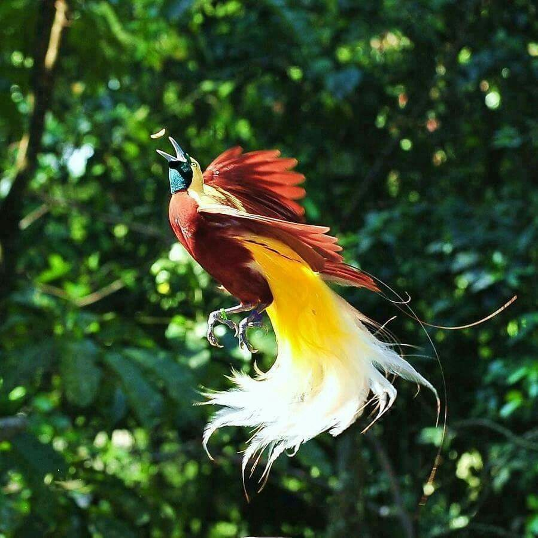
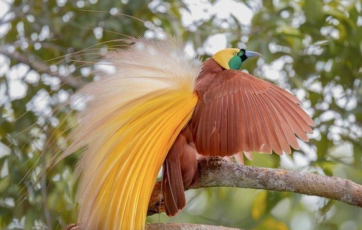
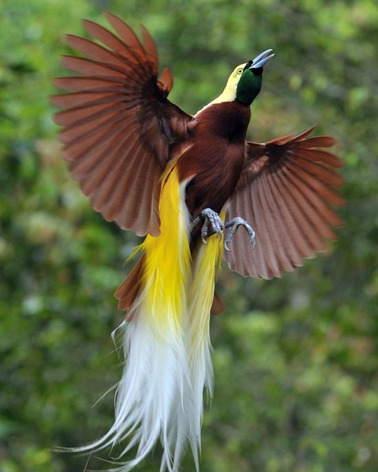

CENRAWASIH
Cendrawasih (Paradisaea sp.) merupakan salah satu jenis burung yang termasuk ke dalam famili Paradisaeidae dan ordo Passeriformes. Diketahui bahwa 14 genus dan 43 spesies yang tersebar luas di dunia. Sebagian besar spesies Cendrawasih berada di wilayah Indonesia, yaitu 30 spesies dan 28 spesies diantaranya berasal dari Papua. Jenis-jenis Cendrawasih salah satunya yaitu Cendrawasih botak (Cicinnurus respublica), Cendrawasih kuning-kecil (Paradisaea minor), dan Cendrawasih merah (Paradisaea rubra) yang merupakan jenis endemik yang dilindungi. Semakin menurunnya populasi cendrawasih di daerah-daerah penyebarannya membuat pemerintah lebih meningkatkan pengawasan dengan menetapkan berbagai aturan sebagai upaya konservasi.


Secara taksonomi Cendrawasih kuning kecil (Paradisaea minor, Shaw, 1809) menurut IUCN, (2018) Cendrawasih memiliki klasifikasi sebagai berikut:
kingdom : Animalia
Phylum : Chordata
Kelas : Aves
Ordo : Passeriformes
Famili : Paradisaeidea
Genus : Paradisaea
Spesies : Paradisaea minor
Burung Cendrawasih (Paradisaea sp.) merupakan hewan yang memiliki bentuk dan ukuran tubuh yang beragam, warna yang unik serta memiliki perbedaan yang signifikan. Biasanya bulu pada burung Cendrawasih berwarna cerah seperti merah, kuning, coklat ungu putih dan perpaduan antara hitam dan biru. Ukuran burung Cendrawasih sangat beragam, mulai dari ukuran 15 cm hingga 110 cm serta memiliki berat kurang lebih 50 gram sampai 430 gram sesuai dengan spesiesnya.
Burung Cendrawasih memiliki kaki tipe petengger dengan ciri-ciri jari kaki panjang serta telapak kaki yang datar. Tipe kaki ini membatu memindahkan burung untuk bertengger pada ranting-ranting pohon. Paruhnya memiliki tipe pemakan biji dengan ciri-ciri paruh yang tebal serta runcing yang berguna untuk memecah biji-bijian.
Cendrawasih kuning-kecil (Paradisaea minor) memiliki ukuran tubuh yang sedang dengan panjang sekitar 32 cm, dari genus Paradisaea. Burung ini memiliki paduan warna kuning dan coklat, dengan paruh abu-abu kebiruan, dan memiliki iris mata berwarna kuning. Burung jantan dewasa memiliki bulu di sekitar leher berwarna hijau zamrud mengkilap, pada bagian sisi perut terdapat bulu-bulu hiasan yang panjang berwarna dasar kuning dan putih pada bagian luarnya. Di ekornya terdapat dua buah tali ekor berwarna hitam. Burung betina berukuran lebih kecil dari burung jantan, memiliki kepala berwarna coklat tua, dada berwarna putih dan tanpa dihiasi bulu-bulu hiasan.
Adapun jenis Cendrawasih lainnya yaitu Cendrawasih botak (Cicinnurus respublica) memiliki tubuh yang mungil karena ukurannya sekitar 21 cm, sedangkan betina memiliki ukaran yang lebih kecil. Burung jantan memiliki bulu berwarna hitam dan terdapat garis kuning pada bagian cakarnya, kakinya berwarna biru, paruhnya hijau dan memiliki sepasang ekor berwarna ungu. Cendrawasih merah (Paradisaea rubra) memiliki ukuran yang lebih besar dibandingkan Cendrawasih sebelumnya dengan ukuran 33 cm, sedangkan untuk ukuran betina lebih kecil dari jantan. Cendrawasih merah memiliki bulu berwarna merah, paruh kuning, dan pada bagian mata terdapat bulu berwarna hijau tua. Pada bagian ekornya terdapat sepasang ekor yang bentuknya sangat khas.

Habitat
Habitat Cendrawasih merupakan lingkungan alami di mana burung hidup dan berkembangbiak. Habitatnya bervariasi bergantung pada spesiesnya. Umumnya Cendrawasih dapat ditemukan di hutan hujan tropis dengan daerah yang lembap dan kaya akan berbagai jenis tumbuhan, hutan dataran rendah yang memiliki iklim lebih hangat, dan hutan pegunungan dengan suhu yang lebih dingin dan sejuk. Habitat burung Cendrawasih juga ditentukan oleh sumber daya makanannya seperti buah-buahan, serangga, dan juga nektar.Habitat Cendrawasih sering kali berada di lingkungan yang lebat akan vegetasi, dan memiliki banyak sumber makanan sehingga memberikan tempat yang cocok sebagai tempat berlindung dan berkembangbiak. Pentingnya untuk menjaga kelestarian habitat-habitat ini agar populasi Cendrawasih dan ekosistem di sekitarnya tetap seimbang dan lestari.
Sebaran
Secara umum burung Cendrawasih tersebar di Indonesia bagian timur, Papua Barat dan Australia bagian timur. Sedangkan persebaran spesies lainnya terbatas dan endemik pada pulau-pulau tertentu. Contohnya Cendrawasih Kuning-kecil (Paradisaea minor) hidup di pulau Papua dan tersebar dari bagian barat dekat kepala burung (Waigeo, Salawati, Batanta, Kofiau, Misool, Gagi, dan Gebe), kepulauan di Teluk Cendrawasih (Numfor, Biak, Yapen, dan Meosnum) dan Kepulauan Aru sampai bagian barat daya Papua. Cendrawasih kuning besar (Paradisaea apoda) merupakan spesies cendrawasih yang tersebar di dataran rendah dan bukit di barat daya Pulau Irian dan Kepulauan Aru. William Ingram membawa spesies ini ke Pulau Tobago Kecil di Karibia pada tahun 1909–1912 untuk mencegah terjadinya kepunahan akibat bulu burung yang diperdagangkan. Namun, itu hanya bertahan sampai tahun 1958 dan sekarang sudah tidak ada lagi.


Status Konservasi
Menurut IUCN sebagian besar status konservasi Cendrawasih memiliki risiko rendah dalam menghadapi kepunahan, namun jika semakin banyaknya kerusakan pada habitat serta maraknya perburuan maka akan memperbesar peluang kepunahan Cendrawasih pada masa mendatang. Secara hukum burung Cendrawasih dilindungi oleh pemerintahan melalui Undang-Undang No. 5 Tahun 1990 serta Peraturan Pemerintah No.7 tahun 1999 tentang Perlindungan serta pelestarian burung Cendrawasih.